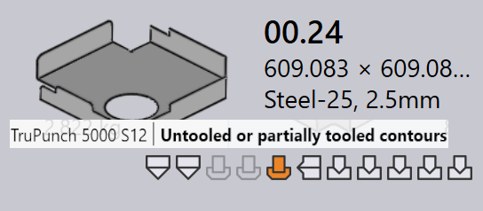

Stav nástrojového vybavení
V TruSmartCAM každá dlaždice dílu vizuálně označuje stav nástrojového vybavení tohoto dílu pro všechny dostupné stroje. To pomáhá uživatelům rychle vidět, pro které stroje je díl nástrojován a zda je nástrojové vybavení připraveno, vyžaduje kontrolu nebo chybí.
-
Stav nástrojového vybavení je zobrazen přímo na dlaždici dílu pomocí ikon a barevných indikátorů.
-
Každá ikona představuje technologii stroje (např. Punching, Laser).
-
Barva ikony označuje aktuální stav nástrojového vybavení pro tento stroj.
Následující tabulka vysvětluje význam každé ikony a barvy, čímž pomáhá uživatelům interpretovat stav nástrojového vybavení přesně.

| Ikona stroje | Popis |
|---|---|
|
Laserový řezací stroj |
|
Děrovací stroj |
|
Ohraňovací lis |
|
Panelový ohýbací stroj |
| Stav nástrojového vybavení | Popis |
|---|---|
|
Nástrojové vybavení je v pořádku |
|
Nástrojové vybavení má varování |
|
Nástrojové vybavení má chyby |
|
Nástrojové vybavení není k dispozici |
Chyby nástrojového vybavení
Chyba CAM (Computer-Aided Manufacturing) nastává během fáze nástrojového vybavení nebo přípravy výroby. Tyto chyby vznikají kvůli problémům jako kolize nástrojů, chybějící nástrojové vybavení nebo neplatné řezací podmínky.
Chyby ohýbacího nástrojového vybavení
-
Rozpoznání kolize a Případ závady upínače : Nastavení ohýbání způsobuje kolize nástrojů nebo uchopovačů během simulace.


-
Chyba přetížení a Úzká příruba nebo otvor příliš blízko : Ohýbací nástroje jsou přetíženy nebo jsou otvory umístěny příliš blízko ohybové čáry, což může poškodit díl nebo nástroje.


-
Je potřeba kontrola a Krátké rozpětí razníku / matrice : Nastavení nástrojového vybavení vyžaduje ruční kontrolu nebo je vybraný rozsah matrice/razníku menší, než je požadováno pro díl.


-
Nastrojování nepřiřazeno, Špatné navrácení nebo Part too big for this machine : Požadované ohýbací nástroje nejsou k dispozici, zadní doraz není správně nakonfigurován nebo je díl příliš velký pro vybraný stroj.


Chyby řezacího nástrojového vybavení
-
Chybějící podmínka řezání : Řezací podmínka není mapována pro surový materiál, takže řezání nelze provést.

-
Nenastrojené nebo částečně nastrojené kontury : Některé tvary nebo hrany jsou vynechány nebo pouze částečně pokryty během procesu nástrojování, což činí díl neúplný pro řezání.
